| Volume 1, Issue 2 - Year 2012 - Pages 88-94 | View PDF (Full-text) |
| DOI: 10.11159/ijmem.2012.011 | Linked References |
| ISSN: 1929-2724 | |
Thermal Management Analysis of a Lithium-Ion Battery Pack using Flow Network Approach
G. Karimi, A.R. Dehghan
Department of Chemical Engineering, Shiraz University
Shiraz, Iran
ghkarimi@shirazu.ac.ir; adb068@gmail.com
Abstract- Among various issues that high power application lithium-ion (Li-ion) batteries are encountered, thermal issues have received more attention because of their potential to degrade battery performance. In the present work, a lumped capacitance heat transfer model was developed in conjunction with a flow network approach to investigate thermal performance of a commercial-size Li-ion battery pack under various operating conditions. Air and silicon oil were chosen as cooling media in the battery pack for two conventional flow arrangements, U- and Z-configurations. Numerical results have revealed that the temperature distributions inside the battery pack can be significantly affected by the coolant type and the flow configuration. The calculated parasitic losses due to the fan/pump power demand as well as the temperature dispersion within the battery pack can be used to devise and optimize the battery thermal management system (BTMS).
Keywords: Li-ion Battery Pack, Modeling, Lumped Capacitance, Battery Thermal Management System, Flow Network Approach
© Copyright 2012 Authors - This is an Open Access article published under the Creative Commons Attribution License terms. Unrestricted use, distribution, and reproduction in any medium are permitted, provided the original work is properly cited.
1. Introduction
Because of increasing demand on new reliable power source for hybrid electric vehicles, lithium-ion (Li-ion) batteries have received much attention in the last decade. Higher power density and efficiency, lower self-discharge rate, longer life and the lack of memory effect are the special features of this new technology that makes it attractive for researchers and manufacturers. Problem free Li-ion batteries are already in use for low power demand applications such as cell phone and laptop battery packs, however; for high power applications such as in automotive propulsion drives, there are serious issues which need to be addressed. To generate large power density required for automotive applications normally a number of battery units needs to be assembled in parallel or series (or combination) in a battery pack to achieve the required output specifications. In the absence of an effective battery thermal management system (BTMS), significant temperature gradients can be developed inside the battery pack due to the battery internal resistance and heat generation resulting from the electrochemical reactions inside the individual cells. The performance of an electric vehicle depends strongly on its battery pack performance. The temperature variations inside the battery pack will lead to different cell-to-cell internal resistance and voltage and can degrade the pack performance and shortening batteries life cycle (Pesaran, 2001). In order to maintain temperature uniformity inside the pack and prevent unfavourable voltage distribution in different cells, application of a is inevitable. A BTMS must be able to regulate temperature and voltage distributions within the pack in order to keep battery performance within an acceptable range and also bring the cooling cost to the lowest possible value (Karimi and Li, 2013). It is evident that lower cooling cost and better battery performance will make electric cars a better competitor in comparison with internal combustion engine automobiles.
Due to inherent restrictions and limited operating conditions associated with experimental measurements, numerical modeling is very efficient for design and performance analysis of BTMS under battery transient operations. Somasundaram et al. developed a two-dimensional transient thermal-electrochemical model for passive thermal
|
cross sectional area [m2] |
|
|
|
Biot number |
|
heat capacity [J/(kg.K)] |
|
|
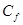 |
friction coefficient |
|
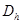 |
hydraulic diameter [m] |
|
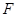 |
Faraday constant; 96485 [C/mole] |
|
|
heat transfer coefficient [W/(m2.K)] |
|
discharge current per unit volume [A/m3] |
|
|
|
thermal conductivity [W/(m.K)] |
|
distance/length [m] |
|
|
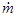 |
mass flow rate [kg/s] |
|
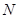 |
number of cells/loops/branches/flow channels |
|
pressure [Pa] |
|
|
|
perimeter [m] |
|
|
heat generation rate per unit volume [W/m3] |
|
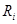 |
internal equivalent resistance [Ω.m3] |
|
Reynolds number |
|
|
|
entropy [J/(mole.K)] |
|
|
time [s] |
|
temperature [˚C, K] |
|
|
|
fluid velocity [m/s] |
|
|
distance/spatial coordinate [m] |
|
spatial coordinate [m] |
|
|
Greek Letters |
|
|
thermal diffusivity [m2/s] |
|
|
Difference |
|
|
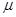 |
viscosity [Pa.s] |
|
Density [kg/m3] |
|
|
Subscripts |
|
|
Coolant |
|
|
Friction |
|
management of a spiral-wound Li-ion battery. Thermal and electrochemical equations are coupled through heat generation terms and temperature-dependent physical properties. It was shown that passive thermal management through a phase change material (PCM) can lower the overall cell temperature at a discharge rate of 5 C, if the PCM thickness is large enough to stand throughout the discharge time (Somasundaram et al., 2012). Chen and Evans were first to develop a two-dimensional model to study the effect of various cell components, stack size and cooling conditions on the performance of Li-polymer electrolyte batteries under different discharge rates. Based on the temperature profiles obtained, they provided useful insights such as how to maintain operating temperature by designing proper cell stacks and choosing proper cooling/insulating systems from heat transfer point of view (Chen and Evans, 1994). Al-Hallaj et al. studied the thermal behavior of commercial cylindrical and prismatic Li-ion cells using electrochemical-calorimetric methods. They measured the cell heat generation during the cell discharge and heat consumption during the cell charge with significant dependence on the state of charge at the end of discharge due to concentration polarization (Al-Hallaj et al., 2000). Maleki and Shamsuri evaluated numerically the thermal performance of a notebook computer Li-ion battery-pack under various operating conditions. They found that the battery temperature rise during charge is dominated by the power dissipation from the control electronics and during discharge by the heat dissipation from Li-ion cells (Maleki and Shamsuri, 2003). Forgez et al. studied the thermal characteristics of a cylindrical LiFePO4/graphite Li-ion battery and a lumped thermal model was developed based on experimentally achieved parameters (Forgez et al., 2010). Sabbah et al. and Kizilel et al. compared the effectiveness of passive cooling by phase change materials with that of active (forced air) cooling for thermal management of high power Li-ion battery packs. Numerical simulations were performed at different discharge rates, operating temperatures and ambient temperatures and compared with the experimental results. The results showed that at high discharge rates and/or at high operating or ambient temperatures, air-cooling is not a proper thermal management system to keep the temperature of the cell in the desirable operating range without expending significant fan power (Sabbah et al., 2008; Kizilel et al., 2009). Inui et al. developed two- and three-dimensional simulation codes of the transient response of the temperature distribution in the cylindrical and prismatic Li-ion battery during a discharge cycle. The numerical results for the cylindrical battery were in good agreement with the experimental data. Their results indicated that battery with the laminated cross section has a remarkable effect on the suppression of the temperature rise in comparison with the battery with square cross section (Inui et al., 2007). Fang et al. used an electrochemical−thermal−coupled model to predict performance of a Li-ion cell and its individual electrodes at various operating temperatures. They validated the model against the experimental data for constant current and pulsing conditions, characteristic of hybrid electric vehicle (HEV) applications. The prediction of individual electrode potential compared with 3−electrode cell experimental data with good agreement (Fang et al., 2010). Duan and Naterer studied experimentally thermal management of battery modules with phase change materials. They examined the effectiveness of PCM thermal management under variable simulated battery discharge conditions and variable ambient temperatures, as well as the effects of buoyancy during PCM melting (Duan and Naterer, 2010). Performance analysis of a commercial size Li-ion battery pack under various discharge conditions was recently conducted by Karimi and Li. Various cooling strategies were examined and the resulting cell-to-cell temperature, internal resistance, state of charge (SOC) and voltage distributions were obtained. It was found that a distributed cooling strategy based on forced air convection would be an effective method in a BTMS (Karimi and Li, 2013).
The present research is an extension to Karimi and Li's work in which a combination of lumped capacitance method and flow network approach are used to assess a battery pack performance under various flow configurations and discharge rates. The performance of the BTMS is evaluated based on the temperature uniformity inside the battery pack and the parasitic power requirements to circulate the coolant within the pack. The results of this work can be used for optimization of the BTMS.
2. Model Formulation
Li−ion batteries are fabricated in many different shapes and configurations, for example, cylindrical, coin, prismatic (rectangular), and thin and flat. Although all four battery configurations are suited for portable and low power demand electronic applications, the prismatic and flat type batteries seems to be the preferred power source for hybrid electric (HE), plug in hybrid electric (PHE) or plug in electric vehicular applications. In this work, combinations of the thin film flat type battery is considered for the analysis.
Typical Li−ion cell consists of a negative electrode formed from a thin layer of powdered graphite, or certain other carbons, mounted on a copper foil and a positive electrode composed of a thin layer of powdered metal oxide (eg. , LiCoO2) mounted on aluminum foil. The two electrodes are separated by a porous plastic film soaked typically in LiPF6 dissolved in a mixture of organic solvents such as ethylene carbonate, ethyl methyl carbonate, or diethyl carbonate. The stacked cells are generally held together by pressure from the battery container.A diagram of a typical Li-ion battery pack is shown in Figure 1. Individual battery units comprised of several cell units are located inside the pack. Each cell unit is consisted of seven thin layers formed into anode, electrolyte and cathode. Individual cells in a battery unit are electrically insulated from each other using separators. The material types, thicknesses and thermo-physical properties of cell layers are listed in Table 1.
During the charge/discharge process, lithium ions are inserted or extracted from the interstitial space between atomic layers within the active materials. The chemical reactions are expressed as:
|
Positive reaction CoO2 + Li+ + e- ⇌ LiCoO2 |
(1) |
|
Negative reaction LiC6 ⇌ C6 + Li+ + e- |
(2) |
|
Total reaction CoO2 + LiC6⇌ LiCoO2 + C6 |
(3) |
< p align="justify" style="text-indent:19.85pt;">In these chemical formulas, the reactions proceed from the left side to the right side during the discharge and in the reverse direction during the charge cycle.
Individual battery units are thermally managed by direct heat exchange with a dielectric cooling medium, such as air or silicon oil which is circulated through the pack. As illustrated in Figure 1, the cooling medium enters the pack via an inlet port, travels through a main entrance manifold, distributes into the cooling ducts and eventually collected in the exit manifold and leaves the pack via an exit port. Two configurations namely U- and Z-configurations are considered in the present study.
The battery pack model presented here consists of two parts: the single battery thermal model and the battery pack flow network model. The battery thermal model determines transient temperature distribution in each battery unit and the surrounding cooling medium as the battery discharges into a fictitious load. The flow conditions around each battery unit are determined using the flow network model. Both models are described in the following sections.
2. 1. The Battery Thermal Model
The structure and assembly of the battery pack under consideration is the same as that used in a previous work by Karimi and Li (Karimi and Li, 2013). Heat generation in the cells is assumed to be caused by ohmic internal resistances and entropy change resulting from electrochemical reactions and can be calculated from:
|
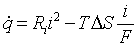 |
(4) |
where is the rate of internal heat generation per unit volume, Ri is the internal equivalent resistance and i is the rate of discharge per unit volume. Different kinds of Li-ion batteries have different values of the internal resistances and the entropy changes. A thermal management strategy requires that these data be determined accurately. Since the internal resistances depend on both the temperature and state of charge of the battery, it should be measured under various battery operating conditions. The battery internal resistance has been determined experimentally (Karimi and Li, 2013).
From the physical dimensions and thermal properties of cell layers and coolant flow conditions around the battery units, the dimensionless Biot number (Bi) is estimated to be less than 0.1.
This indicates that the temperature gradients across individual battery units are negligible. On the other hand, the temperature variations would be dominant only along the cell/battery heights. Hence, the battery governing equation is as follow:
|
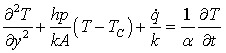 |
(5) |
where is spatial coordinate along the battery height, h is local heat transfer coefficient, P and A are the battery perimeter and cross sectional area, respectively. The average thermal conductivity and thermal diffusivity of the battery are denoted by <k and α, respectively. Tc is the local coolant temperature.
|
Cu |
Graphite |
Electrolyte |
LiCoO2 |
Al |
Separator |
Property |
|
398 |
1.04 |
0.59 |
4 |
237 |
0.35 |
k [W/m. ̊C] |
|
8930 |
1347 |
1223 |
2700 |
2710 |
1400 |
ρ [kg/m3] |
|
386 |
1437 |
1375 |
715 |
902 |
1551 |
C [J/kg. ̊C] |
|
Thickness of a cell layers [μm]: |
||||||
|
120 |
Graphite |
|||||
|
20 |
Cu |
|||||
|
120 |
Graphite |
|||||
|
40 |
Electrolyte |
|||||
|
180 |
LiCoO2 |
|||||
|
20 |
Al |
|||||
|
180 |
LiCoO2 |
|||||
|
50 |
Separator |
|||||
|
730 |
Total thickness of a unit cell [μm]: |
|||||
Equation 5 is subject to the initial and boundary conditions. It is assumed that the whole battery pack including all the battery cells and the cooling medium are initially at a specified temperature, and during the battery discharge, each battery unit exchanges heat with the adjacent cooling media by convection.
2. 2. Flow Network Model
The coolant flow path consisting of the inlet, outlet, supplying and collecting manifolds and the coolant flow channels forms a series of flow loops. The flow distribution in each loop is governed by the conservation laws. The conservation of mass principle requires that total mass flow into and out of each junction in the flow network must be equal, or:
|
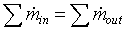 |
(6) |
In order to satisfy the conservation of energy, the sum of pressure changes around each of the flow loops should be zero:
|
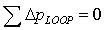 |
(7) |
The frictional head loss can be expressed by Darcy-Weisbach equation:
|
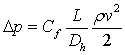 |
(8) |
where L and Dh are the length and hydraulic diameter of branches in the loops and ρ and v are the associated averaged values of the coolant's density and velocity, respectively. The friction coefficient, >Cƒcan be determined from:
|
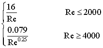 |
(9) |
A linear relationship is used to interpolate Cƒ in the transient region and all the surfaces are considered to be smooth (Karimi et al., 2005).
Hardy Cross method is implemented to obtain the flow rate distributions in the coolant flow loops surrounding the battery units (Cross, 1936).
3. Results and Discussion
Table 2 lists the battery pack thermal management system parameters used in the present study. The battery pack consists of a total of 20 battery units connected in series. Each battery unit considered to be16 cm wide and 23 cm tall
and comprised of 10 cell units connected in parallel. Hence, the electric capacity of each battery unit is 20 mA/cm2 and the associated current density is estimated to be 5.4 mA. The overall magnitude of the battery voltage depends on the arrangement of all battery packs in the system however, for the present battery pack configuration; it varies between 72 V (fully charged) and a lower value depending on the SOC. As illustrated in Figure 1, two conventional flow configurations are considered for the coolant (a) Z-configuration in which the coolant enters the pack from the lower left inlet and leaves the pack at the upper right outlet and (b) U-configuration in which the coolant enters the pack from lower left inlet and leaves the pack at the upper left outlet. Silicon oil and air are selected as possible coolant media.
Lithium-ion battery cells have demonstrated excellent performance when operated at ambient temperature conditions. The adverse effect of temperature excursions on Li-ion cell performance is reported when the cell is operated at temperatures below 0˚C or beyond 65˚C (Karimi and Li, 2013). Despite the relatively wide operating temperature range (0-65˚C ) for battery cells, a non-uniform temperature distribution in a battery pack will lead to non-uniform voltage distribution in the pack which adversely affect the performance durability. Therefore, the main objective of the present thermal management system is (a) to keep the battery cell temperatures within an acceptable range for which heat generation data are available (eg. 20-40˚C ), and (b) to ensure that a relatively uniform voltage distribution prevails within the pack.
The whole computational domain (including the battery container and thermal management ducts) are divided into segments of appropriate sizes and the governing equations are discretized for various regions. The implicit alternating-direction technique, ADI, is applied to solve model Equations along with the boundary conditions. The performance of the thermal management system is assessed based on the temperature uniformity within the pack and the parasitic power consumption (pump or blower) for the coolant circulation.
In the following section, numerical results for various thermal management strategies are presented. Since, the objective is to examine the thermal behavior of the Li-ion battery pack during discharge, when heat is generated within the battery, only cooling strategies are considered. However, the concluding remarks are still valid for battery charging.
Figure 2 shows the temperature distributions inside the battery pack for various rates of discharges (C-rate) at the end of discharge when SOC = 20%. Silicon oil in a Z-configuration is used to manage the temperature. The numerical results indicate that a pretty uniform temperature is prevailed inside the pack even at the high rate of discharge (e.g. 5 C) and the maximum temperature rise in the battery is less than 1 C. This is due to the large heat capacitance of the silicon oil which can absorbs almost all of the heat generated within the battery cells.
Figure 3 compares temperature distributions in the battery pack at the end of discharge at a rate of 2 C. The comparison is made for silicon oil and air as coolant under U- and Z-configurations. As evident from these figures, with air as the coolant, the battery (and coolant) temperatures can rise to as high as 39 ̊C and the associated temperature dispersion in the pack is large. However, with silicon oil the maximum temperature rise in the pack is less than 1 ̊C and the temperature dispersion is very small. Detailed examination of these figures reveals that the temperature dispersion with U-configuration is much larger than that of the Z-configurations for both coolants. Hence the Z-configuration outperforms U-configuration for both coolant fluids.
|
Battery: |
|
|
Number of battery units in the pack |
20 |
|
Number of cells per battery unit |
10 |
|
Cell surface area [cm2 ] |
368 |
|
Electric capacity of each battery unit [A.h ] |
20 |
|
Open-circuit voltage of each cell [V ] |
3.6 |
|
Cut-off state of charge [%] |
20 |
|
Initial pack temperature [ °C ] |
20 |
|
Total thickness of a unit cell [μm] |
730 |
|
Cooling System based on air and silicon oil: |
|
|
Ambient temperature [ °C ] |
20 |
|
Inlet temperature of cooling media [ °C ] |
20 |
|
Inlet fluid velocity [m/s] |
0.1−10 |
|
Heat transfer
coefficient for the cooling media |
100−250 |
It is very important for a thermal
management system to warrant uniformity in temperature at minimum power
consumption. A comprehensive study is conducted to assess the performance of
the thermal management system at various rates of discharge. Table 3 compares
the numerical results for pressure drop, power requirement and temperature
dispersion for silicon oil and air flowing with U- and Z-configurations. As
indicated in this table, when air circulates in the pack (both U- and
Z-configurations), although the power demand is very small the temperature
dispersion is large. The maximum standard deviation (SD) for temperature within
the pack is about 11°C for U-configuration and
7.3°C for Z-configuration. However, with silicon oil as coolant, the temperature dispersion is
very small and a uniform temperature prevails throughout the pack even at high
C rates and at the end of the discharge period. For both coolants, the
Z-configuration results in a more uniform flow and temperature distributions. The calculated pressure drops throughout the pack and the associated
power requirements are also listed in this table. As expected,
The performance of an electric vehicle is affected by
the operating temperature and the degree of temperature gradient in its battery
pack. In this work, thermal analysis of a Li-ion battery pack is carried out to
examine the relationship between battery thermal behavior and design
parameters. A lumped capacitance heat transfer
model was developed in conjunction with a flow network approach to investigate
thermal performance of a commercial-size Li-ion battery pack for constant
discharge rates of up to 5 C. Air and silicon oil were chosen as cooling media
in the battery pack for two conventional flow arrangements, U- and Z-configurations.
From the modeling results, the following conclusions can be made. (a) The
temperature distribution inside the battery pack is significantly affected by
the coolant type and the flow configuration. A uniform temperature distribution
can be achieved inside the pack when silicon oil is used as a coolant. (b) The
parasitic power demand for distribution of the coolant is largely dependent on
the coolant. Coolant configuration Fluid Discharge rate Q (m3/sec ) ∆P (kPa) Power (Watt) Temp.SD (°C ) U configuration Air 0.5 C 0.01168 0.0095 0.11 1.62 1 C 4.22 2 C 11.06 Silicon oil 0.5 C 0.0001168 25.275 2.95 0.06 1 C 0.17 2 C 0.53 Z configuration Air 0.5 C 0.01168 0.0155 0.18 1.06 1 C 2.84 2 C 7.33 Silicon oil 0.5 C 0.0001168 27.556 3.22 0.02 1 C 0.05 2 C 0.15 (c) Numerical results have indicated
that with Z-configuration (for both air and silicon oil) a more uniform
temperature distribution develops inside the pack at the expense of a slightly
larger power demand. (d) The results of the present model can be used to design and optimize Li-ion battery thermal management systems type. Compared to air, silicon oil is much more viscous and as a result; a larger power is required for its circulations. Al Hallaj, S., Prakash, J., Selman, J. R. (2000). Characterization of commercial Li-ion batteries using electrochemical calorimetric measurements. Journal of Power Sources, 87, 6−194. View Article Chen, Y., Evans, J. W. (1994). Thermal analysis of lithium polymer electrolyte batteries by a two dimensional model −Thermal behaviour and design optimization. Electrochimica Acta, 39, 517−526. View Article Cross, H. (1936). Analysis of flow in networks of conduits or conductors. Univ. Illinois Bulletin 286. View Article Duan, X., Naterer, G. F. (2010). Heat transfer in phase change materials for thermal management of electric vehicle battery modules. International Journal of Heat and Mass Transfer, 53, 5176−5182. View Article Fang, W., Kwon, O. J., Wang, C. Y. (2010). Electrochemical thermal modeling of automotive Li-ion batteries and experimental validation using a three-electrode cell. International Journal of Energy Research, 34, 107−115. View Article Forgez, C., Do, D. V., Friedrich, G., Morcrette, M., Delacourt, C. (2010). Thermal modeling of a cylindrical LiFePO4/graphite lithium-ion battery. Journal of Power Sources, 195, 2961−2968. View Article Inui, Y., Kobayashi, Y., Watanabe, Y., Watase, Y., Kitamura, Y. (2007). Simulation of temperature distribution in cylindrical and prismatic lithium ion secondary batteries. Energy Conversion and Management, 48, 2103−2109. View Article Karimi, G., Li, X. (2012). Thermal management of lithium-ion batteries for electric Vehicles. International Journal of Energy Research, 37, 13-24. View Article Kizilel, R., Sabbah, R., Selman, J. R., Al-Hallaj, S. (2009). An alternative cooling system to enhance the safety of Li-ion battery packs. Journal of Power Sources, 194, 1105−1112. View Article Karimi, G., Baschuk, J. J., Li, X. (2005). Performance analysis and optimization of PEM fuel cell stacks using flow network approach. Journal of Power Sources, 147, 162–177. View Article Maleki, A., Shamsuri, A. K. (2003). Thermal analysis and modeling of a notebook computer battery. Journal of Power Sources, 115, 131−136. View Article Pesaran, A. A. (2001). Battery Thermal Management in EVs and HEVs: Issues and Solutions. Advanced Automotive Battery Conference, Las Vegas, Nevada, February 6-8. View Article Somasundaram, K., Birgersson, E., Mujumdar, A.S. (2012). Thermal- electrochemical model for passive thermal management of a spiral-wound lithium-ion battery. Journal of Power Sources, 203, 84−96. View Article Sabbah, R., Kizilel, R., Selman, J.R., Al-Hallaj, S. (2008). Active (air-cooled) vs. passive (phase change material) thermal management of high power lithium-ion packs: Limitation of temperature rise and uniformity of temperature distribution. Journal of Power Sources, 182, 630−638. View Article
4. Conclusions

References